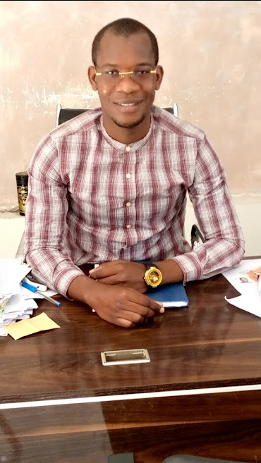

 THIAROYE GARE FASS 4
THIAROYE GARE FASS 4
 abdoulayeniangsarr95@gmail.com
abdoulayeniangsarr95@gmail.com
 77 268 60 64
77 268 60 64
Profil
je me nomme Abdoulaye NIANG Etudiant à l'Ecole Supérieure de Technologie et de Management de Dakar.
skills
HTML CSS JAVASCRIPT XML
Interets
Abdoulaye NIANG
ETUDIANT
EXPERIENCE
Experience 1:
ja'ai une base sur les langages de programmation,comme HTML CSS, mais aussi sur les outils bureautiques comme word et excel.
Experience 2 :
EDUCATION
En 2013 j'ai eu mon BFEM au CEM JOSEPH FELIX CORREA.Après je suis allé au lycée SEYDINA LIMAMOU LAYE de Guédiawaye où j'ai eu mon Baccalaureat serie S2 en 2016.Après mon Bac je suis allé à l'Ecole Supérieure de Technologie et de Management de Dakar où j'ai fait ma licence en Génie Logiciel & Administration Réseaux.
LANGAGES
COMPUTER
Anglais : notions
Français : parlé et écrit
Scratch
Adobe Photoshop